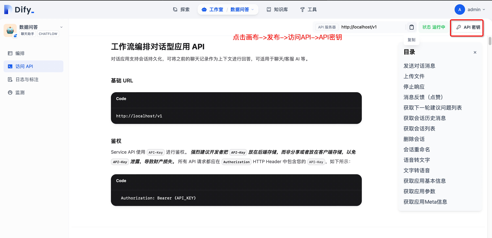
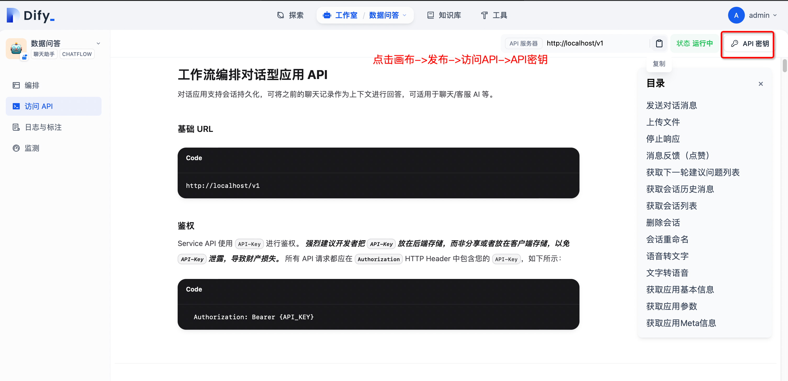

⚙️ 环境配置
💡环境配置要求
在开始之前，请确保您的开发环境满足以下最低配置要求：
- 操作系统：Windows 10/11, macOs M系列, Centos/Ubuntu
- GPU: 本地使用ollama部署，推荐使用Nvidia显卡或CPU模式。推荐公网购买APIKEY形式
- 内存：8GB+
🔧 前置条件
- Python 3.11.x
- uv 0.8.0+
- Dify 0.7.1+
- Mysql 8.0+
- Node.js 18.12.x+
- Pnpm 9.x
📚 大模型选择
- 推荐购买公网大模型阿里云公网大模型服务APIKEY
- 模型要求: Qwen3/Qwen-Plus/Deepseek 模型
⚙️ Dify环境配置
1. Dify安装
- 安装Dify 官方参考文档
- 如果已经安装过Dify环境，可跳过该步骤
- 为了兼顾第一次接触大模型应用的同学，本项目提供了一键拉起Dify服务方便大家快速体验。
- Dify本机访问地址：http://localhost:18000 账号/密码: 需自己注册
# 拉起内置的dify服务
cd docker/dify/docker
docker-compose up -d
2. Dify配置
- 购买阿里云公网大模型服务APIKEY
- 导入项目根目录下的docker/docker/dify/数据问答_v1.1.5_qwen_plus.yml画布
- 获取画布对应的api-key先复制出来下面步骤会使用
- 导入画布后需要手动选择一下配置的大模型并保存
- 画布HTTP节点地址修改,本地部署默认不用修改服务器上需修改为实际IP地址
- 服务器上启动host.docker.internal修改为实际IP地址
- 操作步骤如下图:

 

⚙️ MCP-HUB环境配置
- 官方文档
- MCP-HUB是一个开源的MCP聚合工具方便安装和管理MCP工具
1. MCP-HUB安装
git clone https://github.com/apconw/sanic-web.git
cd docker
# 创建volume目录
mkdir -p ./volume/mcp-data
# 创建一个空的或默认的 mcp_settings.json 文件
touch ./volume/mcp-data/mcp_settings.json
# 启动容器
docker compose up -d mcphub
2. MCP-HUB配置
- 登录MCP-HU admin/admin123
- 安装CMP工具
npx -y 12306-mcp 铁路购票服务
npx -y @amap/amap-maps-mcp-server 高德地图服务

- 国内镜像配置